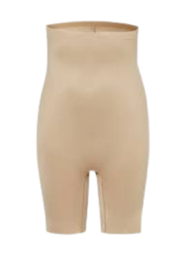
Spanx Shapewear
Sara Blakely wanted better underwear, so she cut the feet off her tights. She kept testing new materials and shapes until it was comfortable. She listened to real people and made Spanx better for everyone. Now, Spanx is a big brand because she kept improving her idea.
Why do people who have a problem often make the best solutions?
Empathy in design
Great products start with understanding real people's needs. When designers listen and care about users, they make things that truly help. Empathy is the first step in good design.
If you could redesign any piece of clothing to make it more comfortable, what would you change?
1
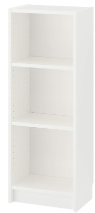
IKEA BILLY Bookcase
The BILLY bookcase first came out in 1979. At first, it was not very strong and you couldn't move the shelves or change how it looked. IKEA listened to what people said and made it better. They made it easier to build, added shelves you can move, and made it in different sizes. Now, the BILLY is stronger and uses better materials. IKEA even uses recycled wood to help the planet.
What can we learn from simple products like the BILLY bookcase?
Cycle by cycle
Design is about making things better, cycle by cycle. By listening to feedback and making changes each time, products can last longer and become more useful. This is called the design cycle, and it's a key part of the design process.
What would your dream bookcase look like? Would it have secret compartments, lights, or something else?
2
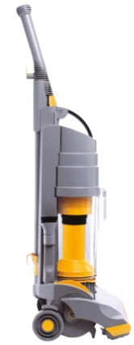
Dyson Vacuum Cleaner
James Dyson made over 5,000 models before his vacuum cleaner worked well. The old vacuums lost power when they filled with dust. Dyson kept changing the design until it worked better. Even after his first success, he kept making it quieter, smaller, and easier to use. Now, Dyson vacuums are famous for being powerful and clever.
Why is it good to keep trying, even if you fail?
Learning from failure
Every time something fails, you learn something new. Designers test, improve, and try again. Failure is not the end—it's a way to find better solutions. This is important in all design and technology work.
Can you think of something at home that could work better if you changed just one thing about it?
3
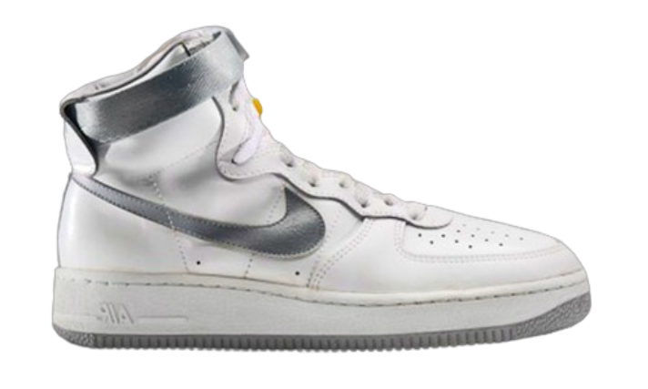
Nike Air Technology
Nike Air shoes started with a wild idea: put air bubbles in the soles! At first, the bubbles popped and the shoes were hard to make. But Nike kept trying. They made the bubbles stronger and easier to see. Over the years, they made the shoes more comfortable and better for running, using ideas from other fields like space science.
How can ideas from other areas help us make new things?
Creative innovation
Innovation often means using ideas from different places. Designers solve problems by thinking creatively and borrowing ideas from other fields. This helps make products better and more exciting.
If you could add "air" or another cool material to any product, what would you choose and why?
4
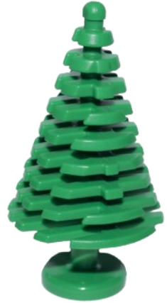
LEGO's Sustainability Journey
LEGO bricks have looked the same for a long time, but they are made from plastic. LEGO wanted to use better materials that are kinder to the planet. They tried over 250 new materials! At first, the new bricks were not perfect, but LEGO kept testing and improving. Now, some LEGO pieces are made from plants, and they are still strong and fun to use.
Is it okay if new materials are not perfect at first?
Sustainable choices
Choosing the right materials is important for the environment. Designers must balance quality, safety, and sustainability. Trying new materials helps us protect the planet and make better products for the future.
What everyday object do you wish was made from eco-friendly materials?
5
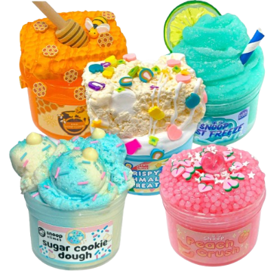
Slime
Slime became a huge trend in schools and online. People loved making their own slime at home using glue, borax, and food colouring. There are so many types—glitter slime, fluffy slime, and even glow-in-the-dark slime! Making and playing with slime is fun, relaxing, and lets you be creative with colours and textures.
Why do people enjoy making and playing with slime?
Experiment and make
Making things by hand helps you learn about materials and processes. Experimenting with slime teaches about mixing, safety, and creativity. Making is a big part of design and technology.
If you could invent a new type of slime, what would it look or feel like?
6
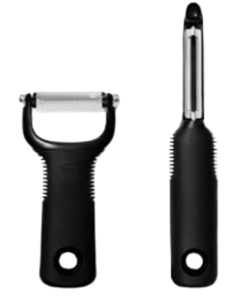
OXO Good Grips Peeler
Sam Farber saw his wife struggle to use a normal peeler because of her sore hands. He made lots of new handles to find one that was easy to hold. The final peeler was soft and comfy for everyone. OXO kept testing with all kinds of people to make sure their tools were easy for everyone to use.
How does making things easier for some people help everyone?
Design for all
Good design means thinking about health, safety, and comfort. When products are easy and safe for everyone, they work better for all users. Ergonomics is about making things fit people, not the other way around.
What kitchen tool or gadget do you find tricky to use, and how would you make it easier?
7
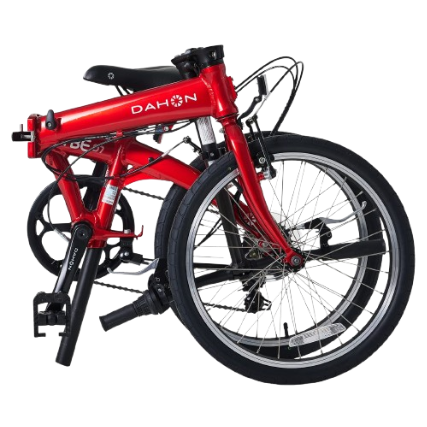
Bird Electric Scooters
Bird launched its first electric scooters in 2017 in California. At first, only a few cities had them, and the scooters were slow and needed charging often. Bird improved the scooters to go faster and last longer. Now, you can find Bird scooters in many cities around the world, and people use an app to rent them for quick trips. They are especially popular with people who want to get around easily.
How did Bird scooters change city travel?
Tech in daily life
Technology changes how we live and move. Electric scooters show how new inventions can make cities cleaner and travel easier. Designers must think about how products fit into society.
If you could design a new way to get around your town or school, what would it be?
8
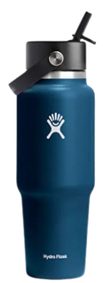
Hydro Flask
Hydro Flask started in 2009 as a water bottle that kept drinks cold for hours. At first, it was just for hikers and athletes. But soon, students and lots of people loved it because it was colourful and kept water cold all day. People began decorating their Hydro Flasks with stickers to show their style. Now, Hydro Flask is a must-have for many students.
How did Hydro Flask become so popular?
Brand and style
Branding and looks matter. When products are useful and look good, people want to use them. Personalising products helps people express themselves and makes design more fun.
How would you decorate your own water bottle to show your personality?
9
Nintendo Switch
The Nintendo Switch is a games console you can use at home or take with you. Before, you needed a TV for big games and a different device for travel. The Switch lets you do both. Nintendo keeps adding new games and features, so it stays exciting for everyone.
Why is it good when products can do more than one thing?
Adapt and improve
Designers make products that fit different needs and situations. Adaptable products are more useful and last longer. Thinking about how people use things helps make better designs.
If you could invent a gadget that works in two different ways, what would it do?
10
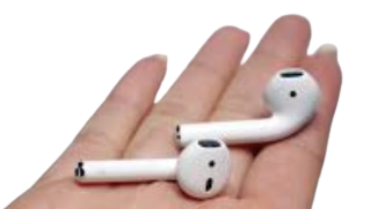
Apple AirPods
Apple's AirPods went through many changes before they were sold. At first, they had problems with battery life and connecting to phones. The shape was tested to fit well in your ear and hold the battery. Apple kept fixing problems, and now AirPods are very popular. They keep making them better with new features.
How do limits help us make better small products?
Solving with limits
Designers often have to work with small spaces or tough rules. Solving these problems leads to clever ideas and new technology. Miniaturisation is a big part of modern design.
What's the smallest gadget you use, and how could it be improved?
11
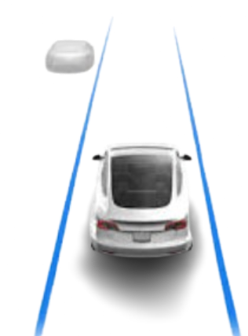
Tesla's Autopilot
Tesla cars can drive themselves using Autopilot. At first, the system could only do simple things. Tesla used information from real drivers to make it better. They sent updates to the cars to fix problems and add new features. This way, the cars keep getting better even after you buy them.
How does updating products after selling them change things?
Always improving
Modern products can change and get better even after you buy them. Digital updates mean designers can fix problems and add features. This is a new way of thinking about products and technology.
If you could add one "smart" feature to your bike, scooter, or backpack, what would it be?
12
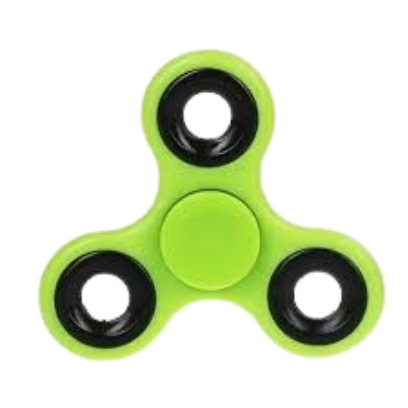
Fidget Spinner
Fidget spinners became super popular almost overnight. They are small toys you spin between your fingers. People liked them because they are easy to use, come in lots of colours, and can help you focus or relax. Some people even learned tricks and collected different designs.
What made fidget spinners such a big craze?
Wellbeing and trends
Some products become popular because they help people feel calm or fit in with friends. Health, wellbeing, and trends all play a part in why we choose certain products.
What's your favourite way to relax or focus when you're feeling fidgety?
13
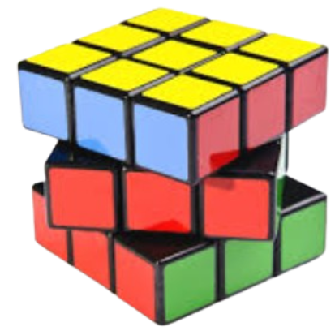
Rubik's Cube
The Rubik's Cube is a colourful puzzle that has been around since the 1970s. It became popular again because people love solving it and sharing their fastest times online. There are competitions, tutorials, and even new versions with more sides and colours.
What makes solving puzzles like the Rubik's Cube so satisfying?
Evaluate and solve
Solving puzzles is about testing ideas, checking your work, and improving your skills. Evaluation is a key part of design and technology—always look for ways to get better.
Can you think of a puzzle or challenge you'd like to invent for your friends?
14
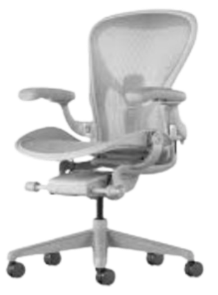
Herman Miller Aeron Chair
The Aeron chair looked very different from other office chairs. People were not sure about it at first. But the new design was more comfortable and better for your back. The team kept testing and changing the chair to make it even better. Now, it is famous for being comfy and looking cool.
How can a strange-looking design become popular?
Aesthetics and comfort
Sometimes, new designs look unusual at first. But if they work well and feel good, people accept and even love them. Aesthetics and ergonomics are both important in design.
If you could design your perfect chair for school or home, what special features would it have?
15